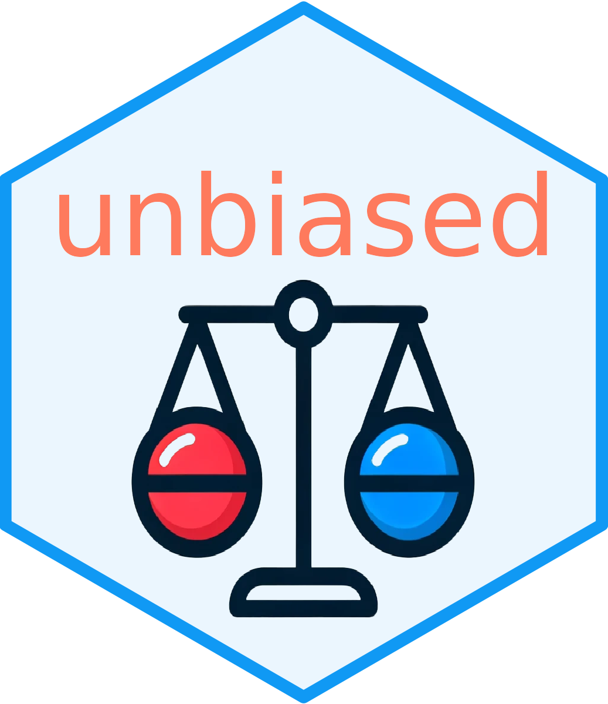

unbiased 
An API-based solution for Clinical Trial Randomization
In clinical trials, the fair and efficient allocation of participants is essential for achieving reliable results. While there are many excellent R randomization packages available, none, to our knowledge, provide a dedicated API for this purpose. The unbiased package fills this gap by featuring a production-ready REST API designed for seamless integration. This unique combination allows for easy connection with electronic Case Report Forms (eCRF), enhancing data management and streamlining participant allocation.
Why choose unbiased?
Our goal in creating unbiased was to provide a user-friendly yet powerful tool that addresses the nuanced demands of clinical trial randomization. It offers:
- Production-Ready REST API: Built for seamless integration with eCRF/EDC systems, facilitating real-time randomization and automation.
- Extensive Database Integration: Supports robust data management practices, ensuring that participant information and randomization outcomes are securely managed and easily accessible.
- Commitment to Quality: Emphasizes development best practices, including comprehensive code coverage, to deliver a reliable and trustworthy solution.
- Adaptability: Whether for small-scale studies or large, multi-center trials, unbiased scales to meet your needs.
- Comprehensive Documentation: To support you in applying the package effectively.
By choosing unbiased, you’re adopting a sophisticated approach to trial randomization, ensuring fair and efficient participant allocation across your studies and support of the broader objectives of clinical research through technology.
Table of Contents
Background
Purpose and Scope for Clinical Trial Randomization
Randomization is the gold standard for conducting clinical trials and a fundamental aspect of clinical trials, in studies comparing two or more arms. In most cases randomization is a desirable technique that will ensure that patients are randomly allocated to defined groups. This is essential for maintaining the integrity of the trial and ensuring that the results are reliable, and blinding of research personnel. However, there are situations where it is desirable for studies to balance patients in terms of numbers in each group or, in addition, to achieve balance with respect to other relevant factors, such as sex or diabetes type. Adequate selection of randomization methods allows the intended randomization goals to be realized.
Unbiased compared to standard and most commonly used randomization methods, e.g. the simple method or the block method, apart from these methods, additionally offers enhanced features of more flexible adaptive methods, which are based on current information about the allocation of patients in the trial. Compared to, for example, block randomization, adaptive randomization not only ensures relatively equal allocation to patient groups, but also allows the groups to be balanced on the basis of certain important covariates, which is its key advantage. This randomization requires predefined criteria, such as the probability with which a given patient will be assigned to a group based on minimizing the total imbalance, or weights that can be assigned personally for each individual covariate. Its advanced algorithmic approach sets it apart from others by minimizing selection bias and improving the overall efficiency of the randomization process in clinical trials.
Unbiased allows the use of simple, block and adaptive minimization randomization methods relevant to the conduct of clinical trials, so package caters to the needs of clinical trial randomization. …
To find out more on differences in randomization methods, read our vignette on Comparative Analysis of Randomization Methods.
Comparison with other solutions
There are many packages that perform specific randomization methods in R. Most of them are designed for stratified randomization and permuted blocks, such as blockrand and randomizeR. Some of them also utilize the options for using minimization randomization - e.g. randpack or Minirand.
Our unique contribution to the landscape is the integration of a comprehensive API and a commitment to rigorous testing. This dual focus ensures that unbiased not only supports the practical needs of clinical trials, but also aligns with the technical requirements of modern clinical research environments. By prioritizing these aspects, unbiased addresses a critical gap in the market: the need for an eCRF-compatible randomization solution that is both dependable and easily integrated into existing workflows. This, together with the implementation of minimization techniques, sets unbiased apart as a novel, comprehensive tool.
Quickstart Guide
Initiating your work with unbiased involves simple setup steps. Whether you’re integrating it into your R environment or deploying its API, we aim to equip you with a reliable tool that enhances the integrity and efficiency of your clinical trials.
Quick Setup with Docker
The most straightforward way to deploy unbiased is through our Docker images. This ensures that you can get unbiased up and running with minimal setup, regardless of your local environment. To use unbiased, pull the latest Docker image:
To run unbiased with Docker, ensuring you have set the necessary environment variables:
docker run -e POSTGRES_DB=mydb -e POSTGRES_USER=myuser -e POSTGRES_PASSWORD=mypassword -e UNBIASED_PORT=3838 ghcr.io/ttscience/unbiasedThis command starts the unbiased API, making it accessible on the specified port. It’s crucial to have your PostgreSQL database ready, as unbiased will automatically configure the necessary database structures upon startup.
API configuration
The unbiased API server can be configured using environment variables. The following environment variables need to be set for the server to start:
-
POSTGRES_DB: The name of the PostgreSQL database to connect to. -
POSTGRES_HOST: The host of the PostgreSQL database. This could be a hostname, such aslocalhostordatabase.example.com, or an IP address. -
POSTGRES_PORT: The port on which the PostgreSQL database is listening. Defaults to5432if not provided. -
POSTGRES_USER: The username for authentication with the PostgreSQL database. -
POSTGRES_PASSWORD: The password for authentication with the PostgreSQL database. -
UNBIASED_HOST: The host on which the API will run. Defaults to0.0.0.0if not provided. -
UNBIASED_PORT: The port on which the API will listen. Defaults to3838if not provided.
Alternative Installation Method
For those preferring to work directly within the R environment, the unbiased package offers an alternative installation method via GitHub. This approach allows users to easily integrate unbiased into their R projects. To proceed with this method, utilize the devtools package for installation by executing the following command:
devtools::install_github("ttscience/unbiased")Following the package installation, the unbiased API can be launched within R. Simply invoke the run_unbiased() function to start the API:
unbiased::run_unbiased()This initiates the API server, by default, on your local machine (http://localhost:3838), making it accessible for interaction through various HTTP clients, including curl, Postman, or R’s httr package.
Getting started with unbiased
The unbiased package offers functions for randomizing participants in clinical trials, ensuring a fair and transparent process.
Complete documentation for the implemented methodology and examples of how to use them are available on our GitHub Pages, providing all the information you need to integrate unbiased into your trial management workflow. Below, we present the basic steps for using unbiased through the API.
API Endpoints
The unbiased API is designed to facilitate clinical trial management through a set of endpoints:
- Study Management: Create and configure new studies, including specifying randomization parameters and treatment arms.
- Participant Randomization: Dynamically randomize participants to treatment groups based on the study’s configuration and existing participant data.
Study Creation
To initialize a study using Pocock’s minimization method, use the POST /minimisation_pocock endpoint. The required JSON payload should detail the study, including treatment groups, allocation ratios, and covariates.
# Initialize a study with Pocock's minimisation method
response <- request(api_url) |>
req_url_path("study", "minimisation_pocock") |>
req_method("POST") |>
req_body_json(
data = list(
identifier = "My_study_1",
name = "Study 1",
method = "var",
p = 0.85,
arms = list(
"placebo" = 1,
"treatment" = 1
),
covariates = list(
sex = list(
weight = 1,
levels = c("female", "male")
),
age = list(
weight = 1,
levels = c("up to 50", "51 or more")
)
)
)
)This call sets up the study and returns an ID for accessing further study-related endpoints.
Patient Randomization
The POST /{study_id}/patient endpoint assigns a new patient to a treatment group, requiring patient details and covariate information in the JSON payload.
# Randomize a new patient
req_url_path("study", my_study_id, "patient") |>
req_method("POST") |>
req_body_json(
data = list(
current_state =
tibble::tibble(
"sex" = c("female"),
"age" = c("up to 50"),
"arm" = c("")
)
)
)This endpoint determines the patient’s treatment group.
Technical details
Running Tests
Unbiased provides an extensive collection of tests to ensure correct functionality.
Executing Tests from an R Interactive Session
To execute tests using an interactive R session, run the following commands:
Make sure that devtools package is installed in your environment.
Ensure that the necessary database connection environment variables are set before running these tests. You can set environment variables using methods such as Sys.setenv.
Running these tests will start the Unbiased API on a random port.
Executing Tests from the Command Line
Use the helper script run_tests.sh to execute tests from the command line. Remember to set the database connection environment variables before running the tests.
Running Tests with Docker Compose
Docker Compose can be used to build the Unbiased Docker image and execute all tests. This can be done using the provided docker-compose.test.yml file. This method ensures a consistent testing environment and simplifies the setup process.
Code Coverage
Unbiased supports code coverage analysis through the covr package. This allows you to measure the effectiveness of your tests by showing which parts of your R code in the R directory are actually being tested.
To calculate code coverage, you will need to install the covr package. Once installed, you can use the following methods:
-
covr::report(): This method runs all tests and generates a detailed coverage report in HTML format. -
covr::package_coverage(): This method provides a simpler, text-based code coverage report.
Alternatively, you can use the provided run_tests_with_coverage.sh script to run Unbiased tests with code coverage.
Configuring Sentry
The Unbiased server offers robust error reporting capabilities through the integration of the Sentry service. To activate Sentry, simply set the SENTRY_DSN environment variable. Additionally, you have the flexibility to customize the setup further by configuring the following environment variables:
SENTRY_ENVIRONMENTThis is used to set the environment (e.g., “production”, “staging”, “development”). If not set, the environment defaults to “development”.SENTRY_RELEASEThis is used to set the release in Sentry. If not set, the release defaults to “unspecified”.